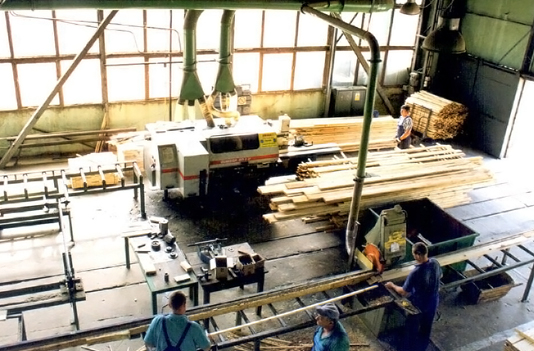
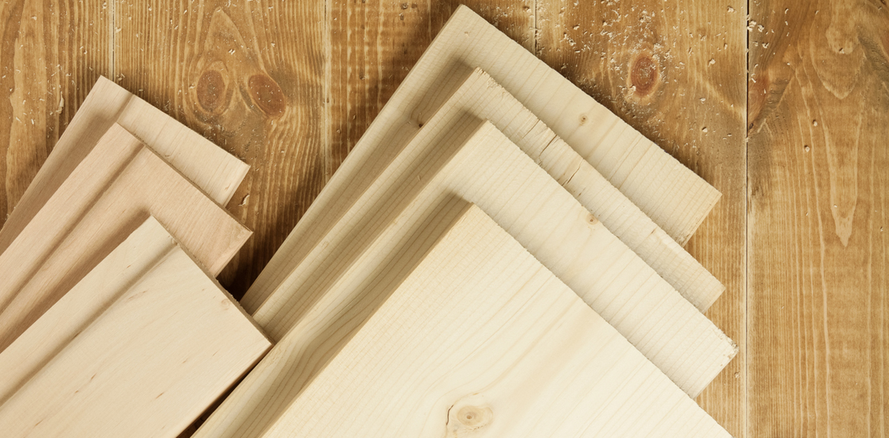

Historia
Droga od rodzinnych początków do przedsiębiorstwa nastawionego na produkcję i rozwój technologiczny.
Tworzymy współczesny wizerunek marki Tartak Tyble, ale rdzeń pozostaje ten sam: jakość, technologia, głęboki przerób drewna i uczciwa komunikacja z klientem.
Tartak Tyble to zakład związany z przetwórstwem drewna i produktami z pogłębionego przerobu. Na podstawie struktury oryginalnego serwisu odtworzyliśmy logiczny układ treści: historię, technologię, jakość i park maszynowy.
Nie kopiujemy starego układu jeden do jednego. Zamiast tego zachowujemy informacje biznesowe i porządkujemy je w nowocześniejszym, bardziej czytelnym projekcie.
Każdy z poniższych bloków prowadzi do osobnej podstrony. Dzięki temu menu działa już jak na pełnym serwisie firmowym, a nie tylko jak na stronie typu landing page.
Droga od rodzinnych początków do przedsiębiorstwa nastawionego na produkcję i rozwój technologiczny.

Procesy suszenia, obróbki, strugania i przygotowania produktów do dalszego zastosowania.

Jakość materiału, kontrola parametrów oraz certyfikaty CE i FSC ważne dla klientów i inwestycji.
Zobacz, jak wygląda historia firmy, technologia produkcji, podejście do jakości oraz wyposażenie zakładu.
Nowoczesna wersja serwisu oparta na strukturze oryginalnej strony firmy i uporządkowana pod realne podstrony.